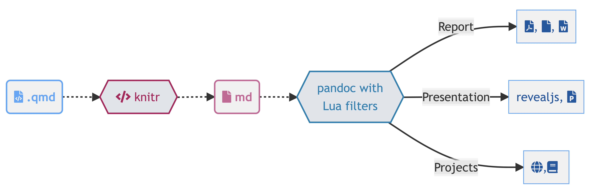
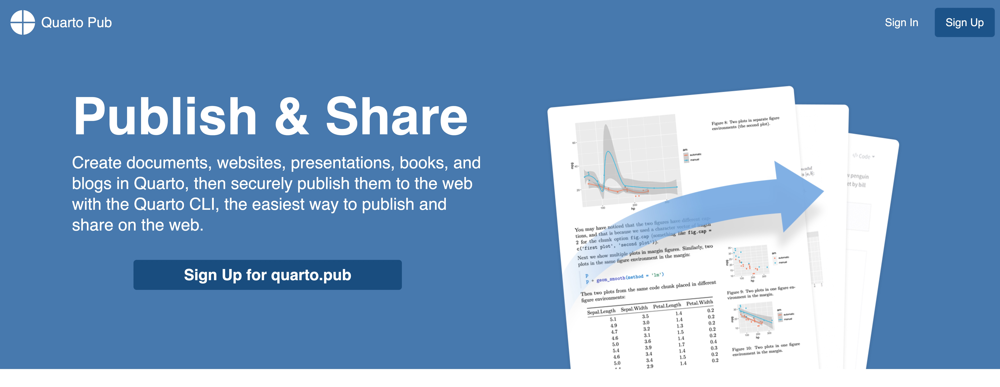
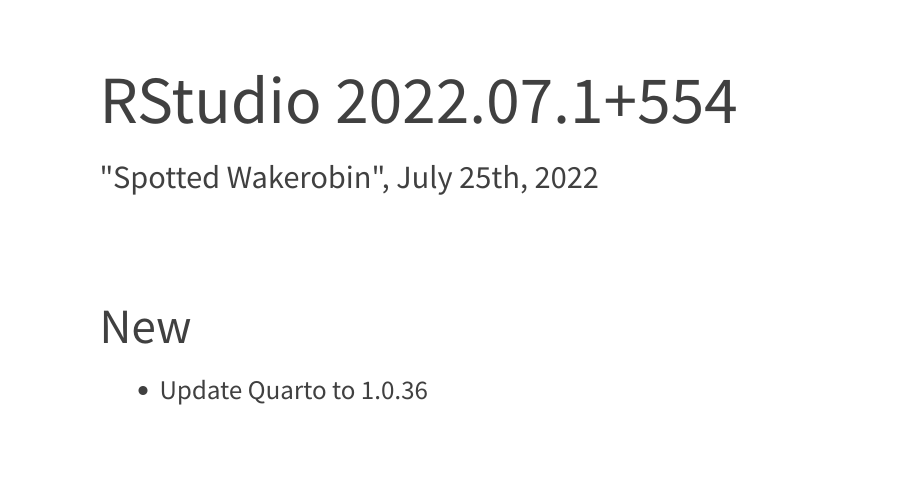

qr <- qrcode::qr_code("https://forms.gle/BfLtXGdTy8zPHE1A6")
plot(qr)Hello Quarto
We assume
You know R
You know a little bit of Markdown
 You want to learn about Quarto, the next-generation of RMarkdown
You want to learn about Quarto, the next-generation of RMarkdown
We’ll teach you
Quarto syntax and formats
More Markdown
Even more R along the way!

Workshop Prep
- Content Website: https://jthomasmock.github.io/quarto-r-medicine/
- FULL workshop materials: rstd.io/get-started-quarto or on RStudio Cloud
- Are you on the latest version of RStudio i.e.
v2022.07.1or later?
pkg_list <- c(
"tidyverse", "gt", "gtExtras", "reactable", "ggiraph", "here", "quarto",
"rmarkdown", "gtsummary", "palmerpenguins", "fs", "skimr"
)
install.packages(pkg_list)Great, let’s get started!
Our Turn
Local
- Install/Open RStudio v2022.07.1
- Clone the workshop:
https://github.com/jthomasmock/quarto-workshop.gitlocally
RStudio Cloud
- Use the pre-built RStudio Cloud with all the workshop materials already installed: https://rstudio.cloud/content/4332583
Hello Quarto
Quarto® is an open-source scientific and technical publishing system built on Pandoc
You can weave together narrative text and code to produce elegantly formatted output as documents, web pages, blog posts, books and more.
How does RMarkdown work?
knitrstarted in 2011, RMarkdown in 2014

Quarto, more than just knitr
We learned from 10 years of literate programming with knitr + rmarkdown

Quarto, more than just knitr

Quarto, more than just knitr

Quarto, more internals
- Quarto uses an engine like
knitrto execute code and generate a temporary output.md
The .md file is processed via Pandoc and Quarto’s Lua filters + Bootstrap CSS for HTML or LaTeX for PDF and converted to a final output format
Lua filters written by R/Python/Julia developers should be interchangeable between formats - typically not language specific!
Widgets
- Quarto can support both
htmlwidgetsin R and Jupyter widgets for Python/Julia
Quarto includes native support for Observable JS, a set of enhancements to vanilla JavaScript created by Mike Bostock (also the author of D3). Observable JS is distinguished by its reactive runtime, which is especially well suited for interactive data exploration and analysis.
Quarto, also with Observable Javascript!
viewof temp = Inputs.range([0, 100], {step: 1, value: 34, label: htl.html`Temp ℃`})Converting temperature from ℃ to ℉
Celsius = ℃ and Fahrenheit = ℉.
```{ojs}
viewof temp = Inputs.range([0, 100], {step: 1, value: 34, label: htl.html`Temp ℃`})
```
Converting temperature from ℃ to ℉ <br>
Celsius = ${d3.format(".0f")(temp)}℃ and Fahrenheit = ${d3.format(".1f")(temp * 9/5 + 32)}℉.Observable.js
viewof bill_length_min = Inputs.range(
[32, 50],
{value: 35, step: 1, label: "Bill length (min):"}
)
viewof islands = Inputs.checkbox(
["Torgersen", "Biscoe", "Dream"],
{ value: ["Torgersen", "Biscoe"],
label: "Islands:"
}
)Plot.rectY(filtered,
Plot.binX(
{y: "count"},
{x: "body_mass", fill: "species", thresholds: 20}
))
.plot({
facet: {
data: filtered,
x: "sex",
y: "species",
marginRight: 80
},
marks: [
Plot.frame(),
]
}
)Inputs.table(filtered)data = FileAttachment("palmer-penguins.csv").csv({ typed: true })filtered = data.filter(function(penguin) {
return bill_length_min < penguin.bill_length &&
islands.includes(penguin.island);
})Quarto is a big universe!

So what is Quarto?
Quarto is a command line interface (CLI) that renders plain text formats (
.qmd,.rmd,.md) OR mixed formats (.ipynb/Jupyter notebook) into static PDF/Word/HTML reports, books, websites, presentations and more
thomasmock$ quarto --help
Usage: quarto
Version: 1.0.36
Description:
Quarto CLI
Options:
-h, --help - Show this help.
-V, --version - Show the version number for this program.
Commands:
render [input] [args...] - Render input file(s) to various document types.
preview [file] [args...] - Render and preview a document or website project.
serve [input] - Serve a Shiny interactive document.
create-project [dir] - Create a project for rendering multiple documents
convert <input> - Convert documents to alternate representations.
pandoc [args...] - Run the version of Pandoc embedded within Quarto.
run [script] [args...] - Run a TypeScript, R, Python, or Lua script.
install <type> [target] - Installs an extension or global dependency.
publish [provider] [path] - Publish a document or project. Available providers include:
check [target] - Verify correct functioning of Quarto installation.
help [command] - Show this help or the help of a sub-command. Comfort of your own workspace


RStudio Visual Editor

Our turn
- Open
quarto-workshop/03-authoring/visual-editor.qmd - Explore the UI elements and visual editor mode
- Turn Visual Editor mode on/off and explore the sections
- Render the document and compare the viewer to Visual Mode!
VS Code

VS Code YAML

VS Code, YAML Intelligence

Jupyter/Jupyter Lab

Jupyter
quarto preview notebook.ipynb --to html
Jupyter YAML
Treat YAML as a “raw cell” in Jupyter - Jupyter doesn’t care about YAML, but it’s needed/used by Quarto

Quarto, for collaboration
contents:
- datalake-extracts-dplyr-aws.rmd
- data-cleaning-siuba.ipynb
- python-r-handoff.ipynb
- computer-vision-r-torch.qmdQuarto Publish
terminal
terminal
quarto publish --help
Usage: quarto publish [provider] [path]
Version: 1.0.36
Description:
Publish a document or project. Available providers include:
- Quarto Pub (quarto-pub)
- GitHub Pages (gh-pages)
- RStudio Connect (connect)
- Netlify (netlify) 
What about for Data Science at Work?
- Use Quarto in RStudio Workbench (v2022.07.1) and RStudio Connect (v2022.07.0)!

One install, “Batteries included”
- Quarto is bundled and comes pre-installed with RStudio v2022.07.1 and beyond!

| Feature | R Markdown | Quarto |
|---|---|---|
| Basic Formats | ||
| Beamer | ||
| PowerPoint | ||
| HTML Slides | ||
| Advanced Layout |
| Feature | R Markdown | Quarto |
|---|---|---|
| Cross References | ||
| Websites & Blogs | ||
| Books | ||
| Interactivity | Shiny Documents | Quarto Interactive Documents |
| Paged HTML | pagedown | Summer 2022 |
| Journal Articles | rticles | Summer 2022 |
| Dashboards | flexdashboard | Fall 2022 |
What to do with my existing .Rmd or .ipynb?
For some of you - nothing changes! Keep using RMarkdown and Jupyter.
However, most existing .rmd or .ipynb can be rendered as-is via Quarto
terminal
terminal
quarto render my-favorite.rmd --to htmlSince Jupyter notebooks can either be treated as a linear document to be re-executed or an already evaluated document there are additional options like: --execute
terminal
terminal
quarto render my-favorite.ipynb --to html --executeWhy Quarto, instead of RMarkdown
- Batteries included, shared syntax
- Choose your own editor and your preferred data science language
- Better accessibility and richer features out of the box
- More enhancements overtime - RMarkdown still maintained, but majority of new features built into Quarto
Collaboration with other colleagues in other languages - shared format, choose your editor and your native language
Rendering

- System shell via
quarto render
terminal
terminal
quarto render document.qmd # defaults to html
quarto render document.qmd --to pdf
quarto render document.qmd --to docx- R console via
quartoR package
library(quarto)
quarto_render("document.qmd") # defaults to html
quarto_render("document.qmd", output_format = "pdf")Change your mental model
Source

Output
Change your mental model
---
title: "ggplot2 demo"
author: "Norah Jones"
date: "5/22/2021"
format:
html:
fig-width: 8
fig-height: 4
code-fold: true
---
## Air Quality
@fig-airquality further explores the impact of temperature
on ozone level.
```{r}
#| label: fig-airquality
#| fig-cap: Temperature and ozone level.
#| warning: false
library(ggplot2)
ggplot(airquality, aes(Temp, Ozone)) +
geom_point() +
geom_smooth(method = "loess"
)
```
A .qmd is a plain text file
- Metadata (YAML)
format: html
engine: knitrformat: html
engine: jupyter- Code
```{r}
library(dplyr)
mtcars |>
group_by(cyl) |>
summarize(mean = mean(mpg))
``````{python}
from siuba import *
(mtcars
>> group_by(_.cyl)
>> summarize(avg_mpg = _.mpg.mean()))
```- Text
# Heading 1
This is a sentence with some **bold text**, *italic text* and an
{fig-alt="Alt text for this image"}.Metadata: YAML
The YAML metadata or header is:
processed in many stages of the rendering process and can influence the final document in many different ways. It is placed at the very beginning of the document and is read by each of Pandoc, Quarto and
knitr. Along the way, the information that it contains can affect the code, content, and the rendering process.
YAML
---
title: "My Document"
format:
html:
toc: true
code-fold: true
---Markdown
Quarto is based on Pandoc and uses its variation of markdown as its underlying document syntax. Pandoc markdown is an extended and slightly revised version of John Gruber’s Markdown syntax.
Markdown is a plain text format that is designed to be easy to write, and, even more importantly, easy to read
Text Formatting
| Markdown Syntax | Output |
|---|---|
|
italics and bold |
|
superscript2 / subscript2 |
|
|
|
verbatim code |
Headings
| Markdown Syntax | Output |
|---|---|
|
Header 1 |
|
Header 2 |
|
Header 3 |
|
Header 4 |
|
Header 5 |
|
Header 6 |
Code
```{r}
#| output-location: column
#| label: fig-airquality
#| fig-cap: Temperature and ozone level.
#| warning: false
library(ggplot2)
ggplot(airquality, aes(Temp, Ozone)) +
geom_point() +
geom_smooth(method = "loess"
)
```
Code, more than just R
```{python}
#| eval: false
#| label: fig-polar
#| fig-cap: "A line plot on a polar axis"
import numpy as np
import matplotlib.pyplot as plt
r = np.arange(0, 2, 0.01)
theta = 2 * np.pi * r
fig, ax = plt.subplots(
subplot_kw = {'projection': 'polar'}
)
ax.plot(theta, r)
ax.set_rticks([0.5, 1, 1.5, 2])
ax.grid(True)
plt.show()
```
What about the CLI?
Quarto is a command line interface (CLI) that renders plain text formats (
.qmd,.rmd,.md) OR mixed formats (.ipynb/Jupyter notebook) into static PDF/Word/HTML reports, books, websites, presentations and more
thomasmock$ quarto --help
Usage: quarto
Version: 1.0.36
Description:
Quarto CLI
Options:
-h, --help - Show this help.
-V, --version - Show the version number for this program.
Commands:
render [input] [args...] - Render input file(s) to various document types.
preview [file] [args...] - Render and preview a document or website project.
serve [input] - Serve a Shiny interactive document.
create-project [dir] - Create a project for rendering multiple documents
convert <input> - Convert documents to alternate representations.
pandoc [args...] - Run the version of Pandoc embedded within Quarto.
run [script] [args...] - Run a TypeScript, R, Python, or Lua script.
install <type> [target] - Installs an extension or global dependency.
publish [provider] [path] - Publish a document or project. Available providers include:
check [target] - Verify correct functioning of Quarto installation.
help [command] - Show this help or the help of a sub-command. Our Turn
- In RStudio, open
quarto-workshop/01-intro/history.qmd - Render with the RStudio
Render ->button - Look at it and compare to Wikipedia source
Move to the integrated terminal and execute:
Render via terminal with
quarto render history.qmd --to pdfCompare to the HTML version